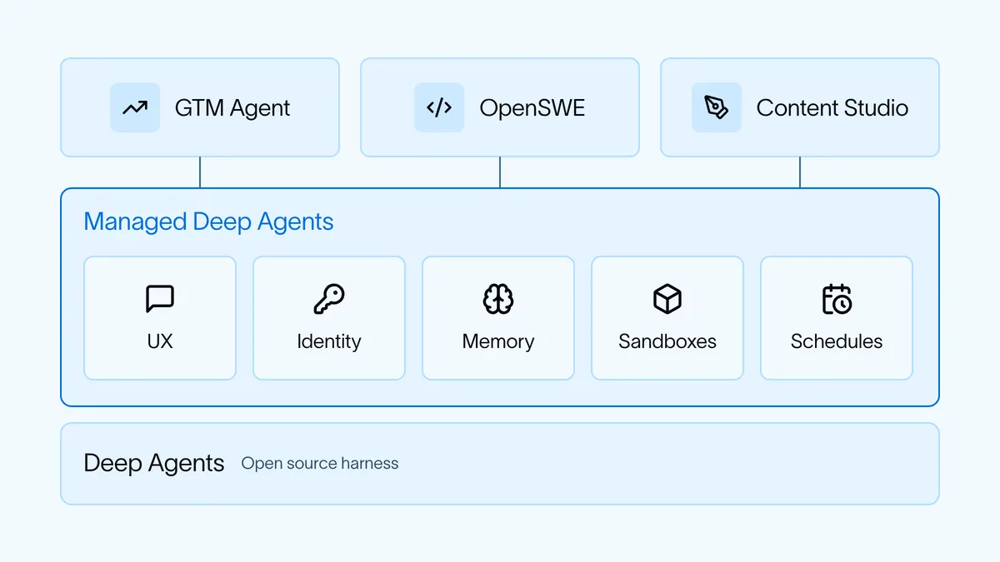
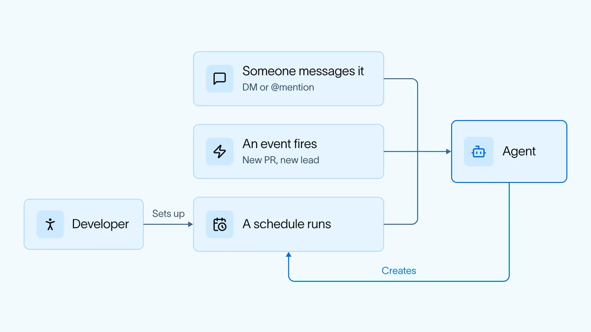

公司級 harness 五元件：三個 agent 共用一層底座，最難的是身分
導讀原文：LangChain Blog〈The five components of building a "company harness"〉——經驗整理，用自家行銷、業務、工程三個內部 agent 舉例
原文沒給定義句，給的是配方：三個 agent 建法相同，拆開就是五個元件。company harness 指公司共用的一層底座（編輯推論）。
樣本先講清楚。GTM Agent 常駐、主動：監看並回覆 email、處理新進的合格潛在客戶、送每日簡報、回答帳戶問題，也能跑對外開發。
OpenSWE 是工程 agent，會寫並草擬 PR，也對所有 PR 跑 code review。Content Studio 是行銷 agent，依公司風格與定位草擬部落格、圖片、PowerPoint、影片。
原文的關鍵句：「所有這些 agent 都用同樣的方式建；我們認為這是建 company harness 的通用配方。」
五條原語全寫成需求句：住在人們工作的地方、知道是誰在問、有記憶、程式跑在沙箱、很大比例是排程執行。先講要滿足什麼，才講用什麼滿足。
平台歸屬在文末才補：五個能力都由 Managed Deep Agents 提供，建在開源 Deep Agents harness 之上，同時保留改 agent 行為的彈性。

閱讀前提：LangChain 自家內部 agent 的經驗整理（廠商視角）。五個元件對應其產品 Managed Deep Agents 的五項功能。全文無導入團隊數、節省工時等量化數據；「完全改變了這些團隊的工作方式」僅限行銷、業務、工程三個團隊。
身分：最棘手的一題，三個 agent 三種混用
原文直說 identity 是處理過最棘手、最難纏的問題，問句是：agent 採取行動時，是代替誰行動？
業界兩種作法：on-behalf-of（代叫用它的那位使用者）與固定憑證（不論誰叫都用同一組，例如 service account）。原文不裁決哪一種對，讓三個 agent 各自混用。
理由不對稱：有些工具必須用本人權限，例如用你的 GitHub handle 開 PR；有些則不該要求每個人逐一登入，例如 Salesforce。
| agent | 代你行動（OBO） | 以自己身分／固定憑證 | 限制與切換規則 |
|---|---|---|---|
| OpenSWE | 用你的 GitHub handle 開 PR | 背景審 PR 用 GitHub app 自己的身分 | 同一 agent 依「有沒有人在叫用」切換 |
| GTM Agent | Email 的回覆與寄送 | Salesforce 等工具用固定身分 | email 工具只在 DM 開放，共用頻道不提供 |
| Content Studio | Notion | 公司 X 帳號用固定憑證 | 只有白名單能發文，其餘只能讀或寫草稿 |
→ 可橫向滑動
表中工具為原文點名者，非全部；兩制在同一個 agent 內並存，界線由各工具自己決定。
把三列並排，界線畫在「工具 × 場景」上，而不是 agent 層級上（編輯推論）：同一個 agent，對不同的人開放不同的能力。
混用方式三列不同：OpenSWE 兩邊都用，GTM Agent 以固定身分為主、email 是例外，Content Studio 按工具分（編輯推論）。
原文在此附了兩份自家文件當實作指引：Add identity to Managed Deep Agents、Manage connections。這一題在原文裡是產品功能，不是抽象原則。
入口、記憶、沙箱：三個元件各自的限定
並列三項限制，原文未給順序
本站整理；三項並列，原文分節敘述、未做此對照。「金鑰不進沙箱」依原文原圖標示 No keys inside；其餘兩格為原文敘述。
入口的預設是 Slack，理由是頻道裡看得到別人怎麼用它。每個 agent 有自己的 app，可被 DM，也可在頻道被 tag。
breakout 是為了不污染人類對話：agent 被拉進討論時，它的發言拆到頻道裡的獨立 thread，原對話保持乾淨。
發起方不只人類：agent 自己也能把後續處理搬進自己的 thread，主頻道只留結論（編輯推論）。
沙箱的分工是 agent 跑在外面、連進去執行程式。三個 agent 的 base image 與相依套件各不相同，OpenSWE 會依頻道／使用者決定起哪一個。
記憶則是原文自己舉手認帳的一塊：這大概是目前探索最少的一塊，我們還有很多工作要做。它把共用事實與個人脈絡分開放，三種 agent 都吃同樣兩層（編輯推論）。
排程：很大比例的 run，沒有人按下開始
原文這一節只有一句事實：很大比例的 run 不是使用者直接叫用，而是排程或事件在背景觸發；未給比例。
來源有兩種。開發者設定：OpenSWE 監聽 PR，一有新 PR 就去審。使用者當場要求：作者請 GTM Agent 每天送簡報，它就自己建了一個 cron。

原文用 ambient agents 稱呼這種狀態：agent 不只是被叫才動的工具，而是持續在背景做事的角色。
兩個例子正好對上圖上兩條路徑：OpenSWE 走 event，GTM Agent 走 schedule。差別在誰設定，不在 agent 能力。
這一條把前四題從例外變成預設：沒有人叫用時，身分、記憶、憑證都得自己成立（編輯推論）。這也是原文把五者打包成一層平台、而非留給各團隊各解的理由。
帶走三件事
五個元件是五個介面決策。先答要滿足什麼，再挑框架。
身分要能分場景。界線在工具×場景，不在把 agent 切開。
排程是分水嶺。沒有人在場，五個元件都得自立（編輯推論）。
同一主題的其他館藏
導讀為本站編輯內容（AI 摘解自原文與館藏重點，非官方文件）；引述數據出自原文，圖解與小標為編輯整理。原文未提供量化成效數據；「company harness」的定義句與圖解 A 的三項對照為編輯整理。內容經對照原文的獨立事實審查後發布。